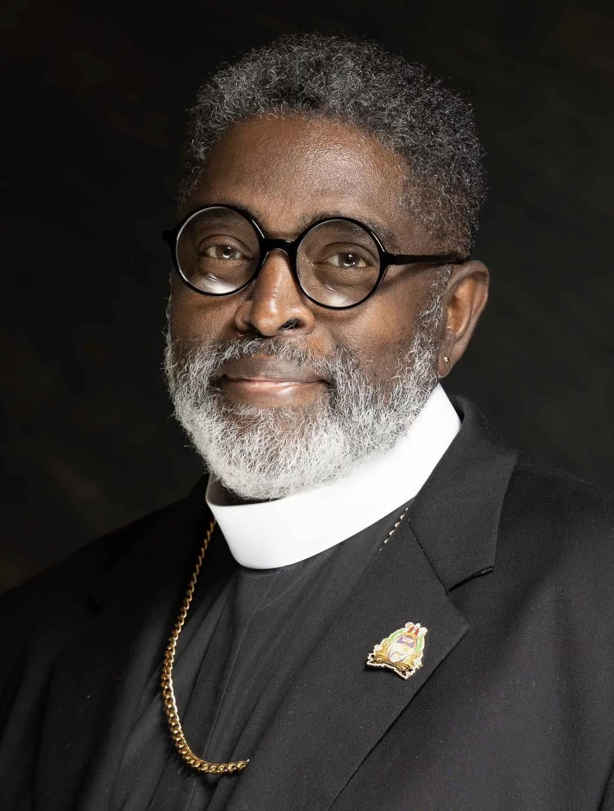

About Us
Who We Are
Omega Holiness Church aspires to develop a ministry empowered by the Holy Spirit, characterized by the presence of signs, wonders, and miracles that actively accompany believers. Our mission focuses on nurturing a generation that embraces truth, walks in holiness, and practices spiritual authority. Through this endeavor, we aim to make a meaningful contribution to our community, nation, and the world by promoting revival, fostering restoration, and sharing the transformative power of Jesus Christ.
Mission Statement
The Omega Holiness Church is committed to the exaltation of Jesus Christ as the foundation of our faith. Our mission includes empowering believers through the guidance of the Holy Spirit and the teachings of the Word. We aspire to equip individuals to lead lives marked by holiness and transformation, reflecting the teachings of Christ in their daily actions.
We firmly uphold the importance of preaching the complete gospel, ensuring that the essential truths of scripture are communicated clearly and effectively. Worship within our community is characterized by authenticity and sincerity, fostering spiritual growth and the presence of God. Our program dedicated to disciple development is designed to provide mentorship and support, facilitating a journey of growth and accountability for each believer.
We prioritize community service as a manifestation of our faith, emphasizing love, compassion, and empowerment. Our commitment to addressing both spiritual and physical needs within our community is central to our mission, as we believe that our collective efforts can generate meaningful change. Through unity and dedicated service, we aim to make a significant impact, fostering a culture of support and spiritual enrichment.
Meet the Team

Pastor Bishop Carter
Lead Pastor
Bringing a passion for spreading love and wisdom. With a heart for seeing people grow in their faith, Bishop Carter brings 27 years of ministry experience and a dynamic preaching style to our Sunday services.